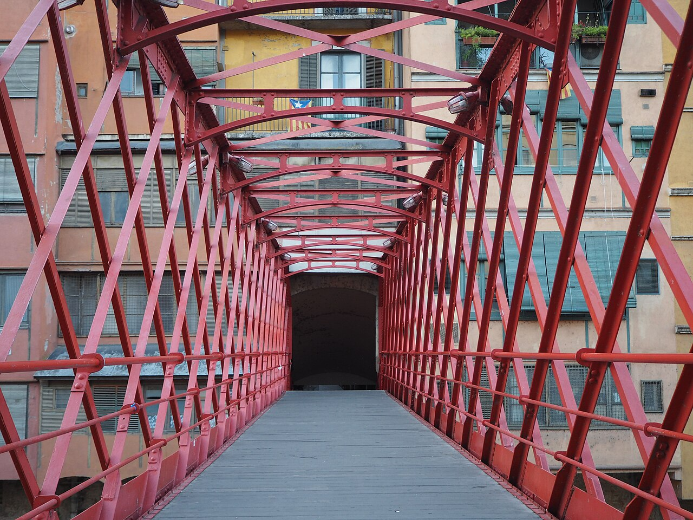
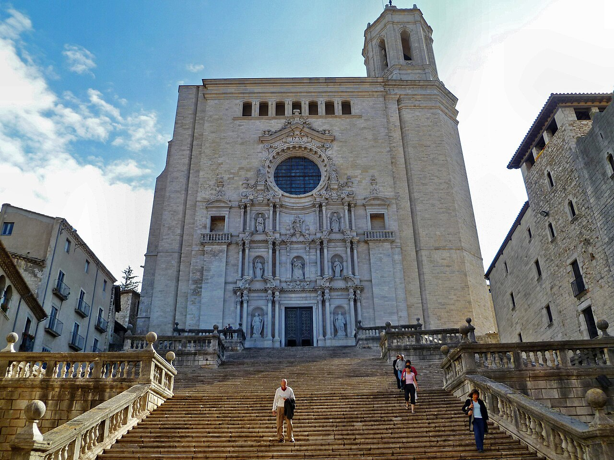

Domingo 6 de diciembre · 16:30
Girona
Nuestra guía para el último paseo. Casas de colores sobre el río justo cuando cae la luz.
Nuestra guía para el último paseo. Casas de colores sobre el río justo cuando cae la luz.
Girona cabe en un paseo corto y tiene mucho que ver. Cruzamos el puente rojo sobre el Onyar y subimos por los callejones del Call hasta la catedral. Al atardecer las casas de colores se reflejan en el río.
Hay poco tiempo y algunos monumentos cierran pronto en domingo. Los horarios cambian según la fuente, así que conviene mirarlos el sábado.
La catedral y la basílica se pueden ver con una entrada conjunta. El turismo de Girona da 7,5 € para adultos, con audioguía. Es un dato que conviene confirmar.
Los Banys Àrabs cuestan 3 €, pero este domingo los veremos solo por fuera.
Pasear por el puente, el río, el Call y las murallas no cuesta nada.
Entramos solo en una iglesia, y mejor la primera que encontremos abierta, porque las dos cierran sobre las 18:00.
El resto lo hacemos por fuera, sin horario. Los minutos exactos entre paradas no los hemos encontrado, pero el centro es pequeño.
Dónde aparcar: no hemos encontrado un dato fiable. Lo mejor es mirar el mapa al llegar.
Una vuelta propuesta en este orden. Es una recomendación, el corazón decide.
El Pont de les Peixateries Velles cruza el río Onyar. Es peatonal y lo construyó la compañía de Gustave Eiffel en 1877, según Wikipedia. Otras fuentes dan 1876. Se levantó unos diez años antes que la Torre Eiffel de París. Sustituyó a unas pasarelas de madera que las crecidas destruían.
Las casas colgadas sobre el agua tienen las fachadas pintadas con una paleta de colores. Una de ellas es la Casa Masó, en la calle Ballesteries, blanca y azul. Es la casa donde nació el arquitecto Rafael Masó.

El Call es uno de los barrios judíos mejor conservados de España. Es un laberinto de callejones estrechos y empinados en torno a la calle de la Força. Una comunidad pequeña vivió aquí hasta finales del siglo XV. Su época de más esplendor fue la de la escuela cabalística.
En el Centro Bonastruc Ça Porta está el Museo de Historia de los Judíos. No hemos encontrado su horario ni su precio. Si está cerrado, los callejones se disfrutan igual.

Nace de un martyrium paleocristiano, un pequeño templo sobre la tumba de un mártir, junto a una calzada romana. Guarda ocho sarcófagos romanos y paleocristianos de los siglos III y IV. También tiene la tumba gótica de san Narciso, patrón de la ciudad.
Su campanario gótico es de los siglos XIV a XVI. Un rayo le cortó la punta. Fue declarada basílica menor en 2011. Al pie de su escalera hay una columna con una leona encima, del siglo XII, la Lleona.

Empezó en estilo románico en el siglo XI. La primera piedra de la parte gótica se puso el 29 de abril de 1312. Tiene la nave gótica más ancha del mundo, con casi 23 metros.
Dentro está el Tapiz de la Creación, una pieza románica única, que se ve en la sala capitular. Aunque no entremos, la gran escalinata de la fachada ya es un paseo para sentarse un momento a mirar la ciudad.

No son árabes. Son unos baños públicos cristianos de estilo románico, hechos al modelo de las termas romanas y de los baños islámicos. Se mencionan por primera vez en 1194. Se derribaron en el asedio de 1285 y se reconstruyeron desde 1294.
Dentro hay una piscina octogonal con ocho columnas esbeltas y una linterna que deja entrar la luz. Este domingo cierran a las 14:00, así que quedan para otra vez.

Las murallas carolingias son del siglo IX. Las bajomedievales son de los siglos XIV y XV. El paseo conserva las torres Julia y Cornelia y termina en los Banys Àrabs.
Se suele recorrer desde los Jardins dels Alemanys hasta los Jardins de la Muralla. Es gratis, pero no hemos encontrado su horario y no sabemos si cierra al anochecer. Si está abierto, es un buen final para el crepúsculo.

Girona nació como un campamento romano y fue durante siglos una ciudad fortificada. Casi cada rincón del paseo guarda una de esas épocas.
Pompeyo levanta un oppidum, el origen de la Gerunda romana.
La ciudad se entrega a Carlomagno a cambio de conservar sus leyes.
Se construyen las murallas carolingias.
Primera mención de los Banys Àrabs.
Se pone la primera piedra de la parte gótica de la catedral.
Un pogromo en el Call y, un siglo después, la expulsión de los judíos.
La compañía de Eiffel construye el puente rojo sobre el Onyar. Otras fuentes dicen 1876.
Girona deja de ser plaza fuerte.
Sant Feliu pasa a ser basílica menor.